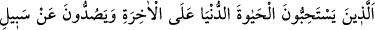
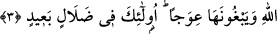

Bize bizim burhânımız ile âgâhlık ver,
Maiyyet sırrından ki bize ihsân edersin.
“Şiddetli azabdan dolayı kâfirlerin” Kitâb’ı inkâr edenlerin “vay hâline!” Veyl,
helâk demektir. Yâni, şiddetli azabdan dolayı feryad ü figan edip helâk olmayı
dileyeceklerdir. Nitekim bir âyette “oracıkta yok oluvermek isterler.” (el-Furkan,
25/13) buyrulmuştur.
3. Onlar dünyâ hayâtını âhirete tercih ederler, insanları Allah’ın yolundan
alıkoyarlar ve onun eğrilmesini isterler. İşte onlar, büyük bir sapıklık içindedirler.
“Onlar, dünyâ hayâtını âhirete tercih ederler.” Yâni, onlar dünyâ hayâtını seçip onu
ebedî âhiret hayâtına tercih ederler. Çünkü bir şeyi başka bir şeye tercih eden, bir
bakıma tercih ettiği şeyin kendisine başka şeylerden daha üstün ve daha sevimli
olmasını istemiş olmaktadır.
İbn Abbas (r.anhümâ) der ki: “Onlar âhiretle ilgili durumları hafife alarak dünyâda
hemen elde edecekleri şeyleri alırlar.” Bu ise gerçek kâfirin vasıflarındandır. Onlar
dünyâyı ve dünyevî arzuları elde etmek için ciddiyetle uğraşırlarken, âhireti taleb etme,
nefislerinin heveslerine karşı çıkma ve şerîata uygun davranma hususlarında külfet ve
meşakkatlere göğüs germede tembellik göstererek âhireti bir kenara bırakırlar. Şu halde
gerçek mü’minin sâdece ‘müslüman’ ismine râzı olmayıp taklîdî îmân ile yetinmemesi
gerekir. Çünkü taklîdî îmân, hakîkî îmânın aksine karanlıklardan tamâmen hâlî değildir.
Hakîkî îmân ise sırf nurdur. Onda hiçbir değişme olmaz.
Yüzüne kalblerin takvâsından gül rengi koyan kul
Güzel yüzü ateşte nasıl siyah eyler?
“İnsanları Allah’ın yolundan alıkoyarlar” insanların Allah’ın dînini kabûl
etmelerine mâni olurlar.
Burada işâret vardır ki hevâ ehli, müridlerin istikâmetlerini Allah’ı talebden
çevirirler. Onlara nasihat ediyor gibi görünerek Hakk’a giden yolu keserler. Hakk’a
yönelmek gâyesiyle dünyâyı terk ettikleri, ondan el etek çektikleri, uzlete çekildikleri ve
halktan koptukları için müridleri kınarlar.
“ve onun eğrilmesini isterler.” Yâni bu yola girmesine mâni olmak ve saptırmak
istedikleri kimselere onlar bu yolun eğri ve yanlış olduğunu, doğru bir yol olmadığını
söylerler. Yâni “Bu yol eğridir ve menzil-i maksûda ulaştırmaz.’ derler.
“İşte onlar” zikredilen çirkinliklerle muttasıf olanlar “büyük bir sapıklık